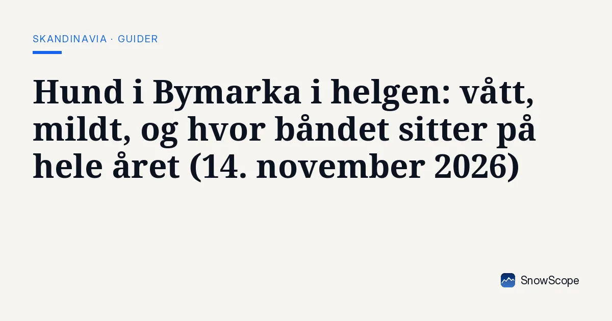

Trondheim: snø i dag
Trondheim: snø i dag. Trondheims hunder får ikke mye snø i helgen. Byens stasjoner meldte ingen snø på bakken fredag; nærmeste målte snø ligger …
Hund i Bymarka i helgen: vått, mildt, og hvor båndet sitter på hele året (14. november 2026)

Trondheims hunder får ikke mye snø i helgen. Byens stasjoner meldte ingen snø på bakken fredag; nærmeste målte snø ligger innover i landet, 5 cm i Meråker og 18 cm i Tågdalen. Lørdag kan gi litt våt snø, men med ettermiddager opp mot 5 °C blir den neppe liggende. Bymarka er likevel stedet å gå, og der er det regler verdt å kjenne.
Den generelle regelen gjelder ikke, de lokale gjør
Trondheims forskrift om hundehold krever bånd 1. april til 20. august i hele kommunen, så den perioden er over. Men noen båndtvangsregler gjelder hele året: i og ved bolig- og handleområder, i parker, på kirkegårder og ved skoler og barnehager, nærmere vannkanten enn 50 meter ved Jonsvatnet og på isen der, og langs Nidelvkorridoren.